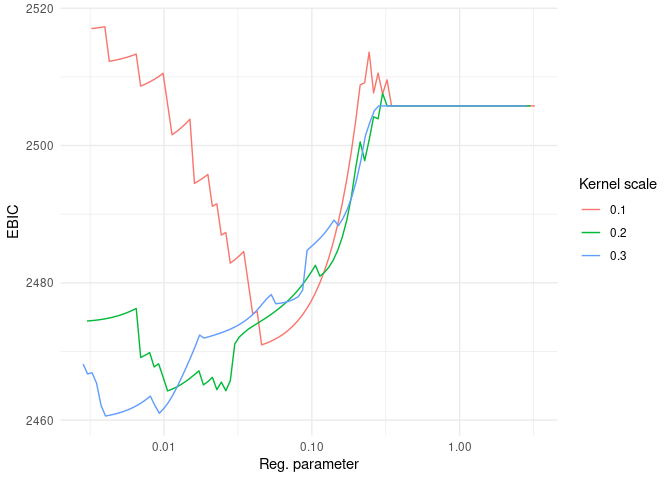

Last updated: Sep-18-2023
Installation
You can install the development version of LSVCMM from GitHub with:
# install.packages("devtools")
devtools::install_github("fontaine618/LSVCMM")Reference
For details on the LSVCMM method, refer to the Draft manuscript.
Example
This is a basic example which shows you how to solve a common problem:
library(LSVCMM)
data = generate_synthetic_data()
fit = lsvcmm(
data=data$data,
response="response",
subject="subject_id",
time="time",
vc_covariates="group",
kernel=list(scale=c(0.3, 0.5, 1.))
)
library(ggplot2)
ggplot() +
geom_line(
data=fit$results,
mapping=aes(x=penalty.lambda, y=ebich, color=as.factor(kernel.scale), group=kernel.scale)
) + scale_x_log10() +
theme_minimal() + labs(color="Kernel scale", x="Reg. parameter", y="EBIC")
i = which.min(fit$results$ebich)
fit$vc_path[,,i]
#> [,1] [,2] [,3] [,4] [,5] [,6]
#> [1,] 0.03275999 -0.01016253 -0.06624197 -0.09219969 -0.09158987 -0.1120982
#> [2,] -0.20019829 0.00000000 0.00000000 0.00000000 0.03315548 0.1962638
#> [,7] [,8] [,9] [,10] [,11]
#> [1,] -0.1921048 -0.3012465 -0.3340842 -0.1740154 0.2178366
#> [2,] 0.8923241 1.0984185 1.2979464 1.0967269 0.4775085
data$true_values
#> time b0 b1
#> 1 0.0 0 0.0000000
#> 2 0.1 0 0.0000000
#> 3 0.2 0 0.0000000
#> 4 0.3 0 0.0000000
#> 5 0.4 0 0.0000000
#> 6 0.5 0 0.1192029
#> 7 0.6 0 0.5000000
#> 8 0.7 0 0.8807971
#> 9 0.8 0 0.9820138
#> 10 0.9 0 0.9975274
#> 11 1.0 0 0.9996646
fit$results[i, ]
#> llk rss family.dispersion family.name
#> 163 -1213.451 872.9491 1.165486 gaussian
#> penalty.name penalty.alpha penalty.lambda penalty.adaptive
#> 163 adaptive_sparse_group_lasso 1 0.5654141 0
#> penalty.penalize_intercept link_function.name working_covariance.estimate
#> 163 FALSE identity TRUE
#> working_covariance.ratio working_covariance.name kernel.name kernel.scale
#> 163 0.7461958 compound_symmetry gaussian 0.5
#> control.max_iter control.max_rounds control.rel_tol control.verbose
#> 163 1000 50 1e-06 1
#> control.update_method control.backtracking_fraction df df_kernel df_logn
#> 163 PGD 0.9 19 1.949019 118.12
#> df_logn_kernel df_max aic aich bic bich ebic ebich
#> 163 12.11674 22 2464.901 2430.8 2545.022 2439.018 2603.751 2445.043